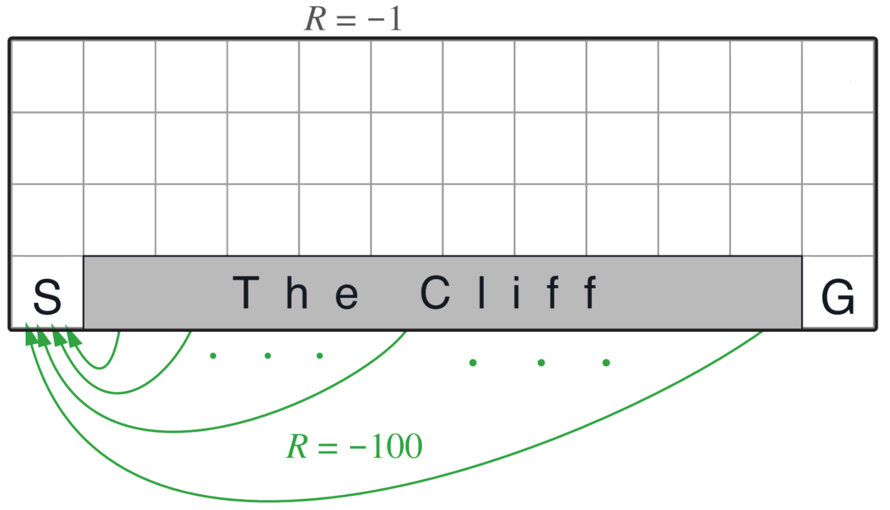
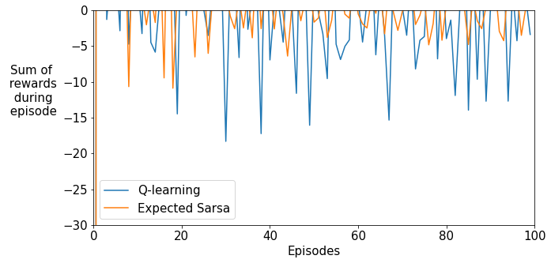
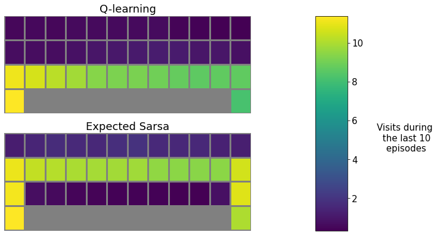
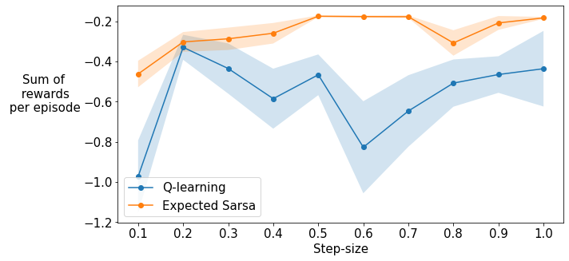

Assignment 2 - Q-Learning and Expected Sarsa
Welcome to Course 2 Programming Assignment 2. In this notebook, you will:
- Implement Q-Learning with $\epsilon$-greedy action selection
- Implement Expected Sarsa with $\epsilon$-greedy action selection
- Investigate how these two algorithms behave on Cliff World (described on page 132 of the textbook)
We will provide you with the environment and infrastructure to run an experiment (called the experiment program in RL-Glue). This notebook will provide all the code you need to run your experiment and visualise learning performance.
This assignment will be graded automatically by comparing the behavior of your agent to our implementations of Expected Sarsa and Q-learning. The random seed will be set to avoid different behavior due to randomness. We will highlight the functions you have to use for generating random samples and the number of times these functions should be called.
Packages
You will need the following libraries for this assignment. We are using:
- numpy: the fundamental package for scientific computing with Python.
- scipy: a Python library for scientific and technical computing.
- matplotlib: library for plotting graphs in Python.
- RL-Glue: library for reinforcement learning experiments.
DO NOT IMPORT OTHER LIBRARIES - This will break the autograder.
1 | %matplotlib inline |
1 | plt.rcParams.update({'font.size': 15}) |
Q-Learning
In this section you will implement and test a Q-Learning agent with $\epsilon$-greedy action selection (Section 6.5 in the textbook).
Implementation
Your job is to implement the updates in the methods agent_step and agent_end. We provide detailed comments in each method describing what your code should do.
1 | # ----------- |
Test
Run the cells below to test the implemented methods. The output of each cell should match the expected output.
Note that passing this test does not guarantee correct behavior on the Cliff World.
1 | # ----------- |
Expected Sarsa
In this section you will implement an Expected Sarsa agent with $\epsilon$-greedy action selection (Section 6.6 in the textbook).
Implementation
Your job is to implement the updates in the methods agent_step and agent_end. We provide detailed comments in each method describing what your code should do.
1 | # ----------- |
Test
Run the cells below to test the implemented methods. The output of each cell should match the expected output.
Note that passing this test does not guarantee correct behavior on the Cliff World.
1 | # ----------- |
Solving the Cliff World
We described the Cliff World environment in the video “Expected Sarsa in the Cliff World” in Lesson 3. This is an undiscounted episodic task and thus we set $\gamma$=1. The agent starts in the bottom left corner of the gridworld below and takes actions that move it in the four directions. Actions that would move the agent off of the cliff incur a reward of -100 and send the agent back to the start state. The reward for all other transitions is -1. An episode terminates when the agent reaches the bottom right corner.

Using the experiment program in the cell below we now compare the agents on the Cliff World environment and plot the sum of rewards during each episode for the two agents.
The result of this cell will be graded. If you make any changes to your algorithms, you have to run this cell again before submitting the assignment.
1 | # --------------- |
100%|██████████| 100/100 [00:12<00:00, 8.12it/s]
100%|██████████| 100/100 [00:16<00:00, 6.15it/s]

To see why these two agents behave differently, let’s inspect the states they visit most. Run the cell below to generate plots showing the number of timesteps that the agents spent in each state over the last 10 episodes.
1 | # --------------- |

The Q-learning agent learns the optimal policy, one that moves along the cliff and reaches the goal in as few steps as possible. However, since the agent does not follow the optimal policy and uses $\epsilon$-greedy exploration, it occasionally falls off the cliff. The Expected Sarsa agent takes exploration into account and follows a safer path.
Previously we used a fixed step-size of 0.5 for the agents. What happens with other step-sizes? Does this difference in performance persist?
In the next experiment we will try 10 different step-sizes from 0.1 to 1.0 and compare the sum of rewards per episode averaged over the first 100 episodes (similar to the interim performance curves in Figure 6.3 of the textbook). Shaded regions show standard errors.
This cell takes around 10 minutes to run. The result of this cell will be graded. If you make any changes to your algorithms, you have to run this cell again before submitting the assignment.
1 | # --------------- |
100%|██████████| 600/600 [01:38<00:00, 6.08it/s]

Expected Sarsa shows an advantage over Q-learning in this problem across a wide range of step-sizes.
Congratulations! Now you have:
- implemented Q-Learning with $\epsilon$-greedy action selection
- implemented Expected Sarsa with $\epsilon$-greedy action selection
- investigated the behavior of these two algorithms on Cliff World